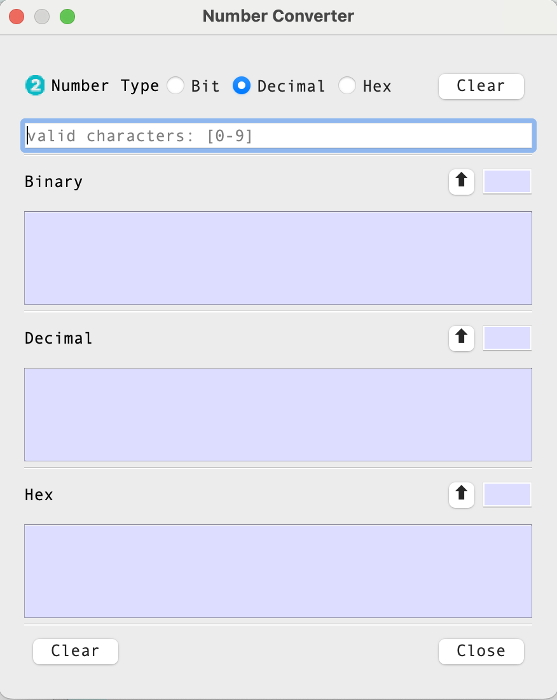

Number Converter Dialog Guide
The Number Converter converts a number between binary, decimal, and hexadecimal representations. Open it from Tool > Num Converter.

Figure 1. Number Converter dialog. Enter a value at the top; the equivalent values appear in the three output sections below.
Screen Areas
- Number Type — Select the radix of the value entered in the input field: Bit (base 2), Decimal (base 10), or Hex (base 16). Decimal is selected by default.
- Input field — Enter the value to convert. The placeholder indicates valid characters for the selected type.
- Input Clear — Clears the input field.
- Binary output — Shows the equivalent binary representation. Its length is shown in the small read-only field beside the up-arrow button.
- Decimal output — Shows the equivalent decimal representation and its length.
- Hex output — Shows the equivalent hexadecimal representation and its length.
- Up-arrow buttons — Copy that section's value to the input field and select its matching input type, allowing conversion from that representation.
- Output Clear — Clears all three converted values and their lengths.
- Close — Closes the dialog.
Convert a Number
- Select the input Number Type.
- Enter a value in the input field.
- Read the equivalent values in the Binary, Decimal, and Hex sections. Conversion occurs as you type.
- To use one of the results as the next input, select the up-arrow button beside that result.
Input Formats
| Type | Valid digits | Example |
|---|---|---|
| Bit | 0 and 1 |
101101 |
| Decimal | Decimal digits; a minus sign is supported for negative values | 45 or -12 |
| Hex | 0–9, A–F, or a–f |
2D or a4 |
Whitespace is removed before conversion. An invalid value triggers a warning. When entering hexadecimal with an odd number of digits, the converter pads a leading zero internally before decoding it.
Clear Values
- Select the top Clear button to clear the input field.
- Select the bottom Clear button to clear the Binary, Decimal, and Hex results.